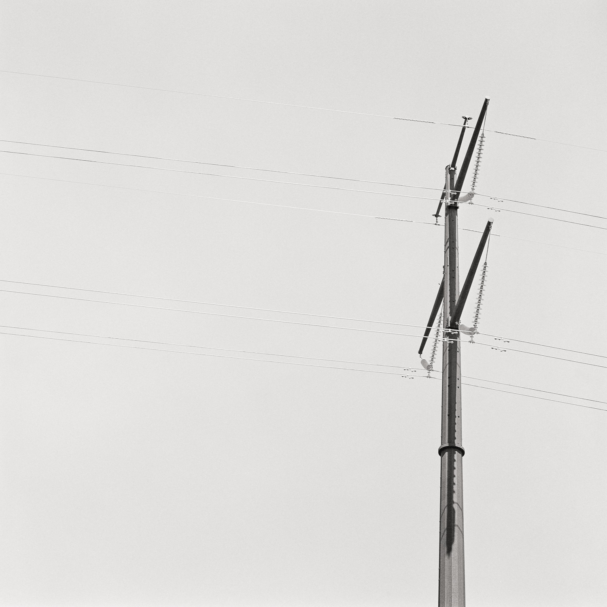
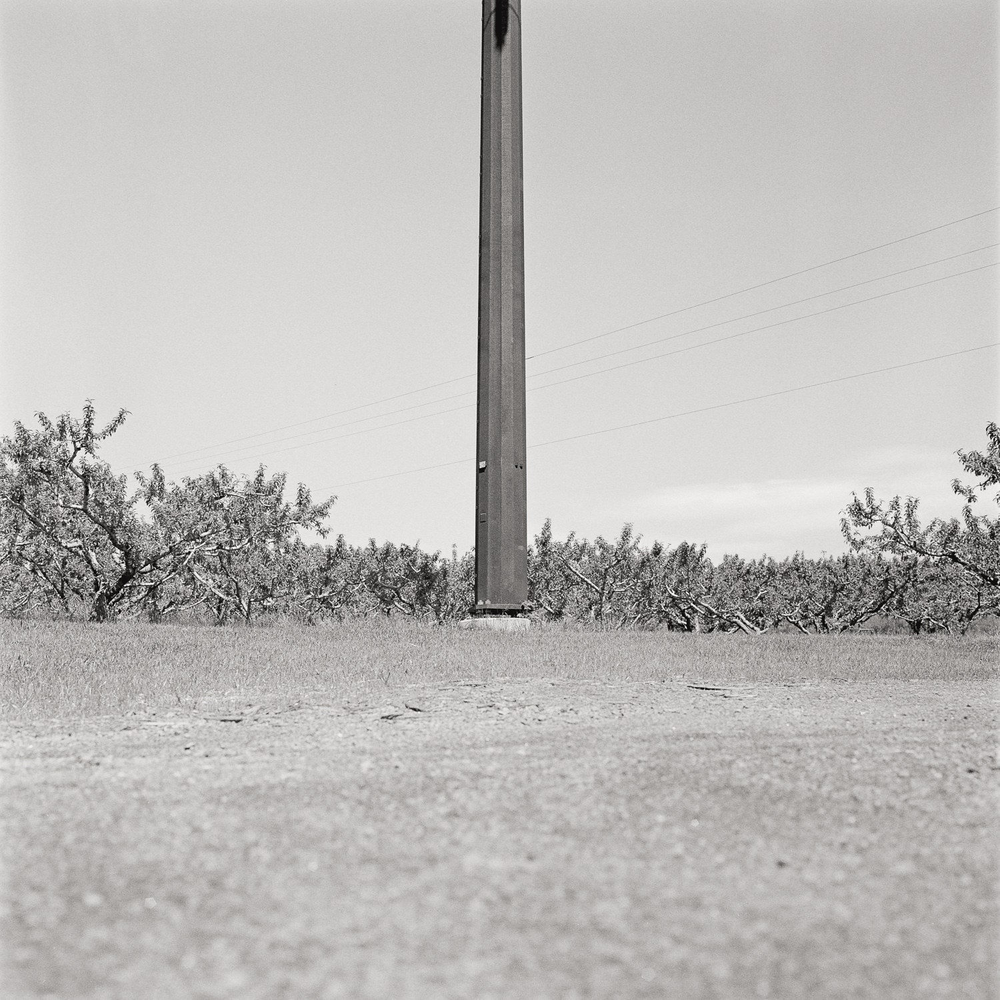
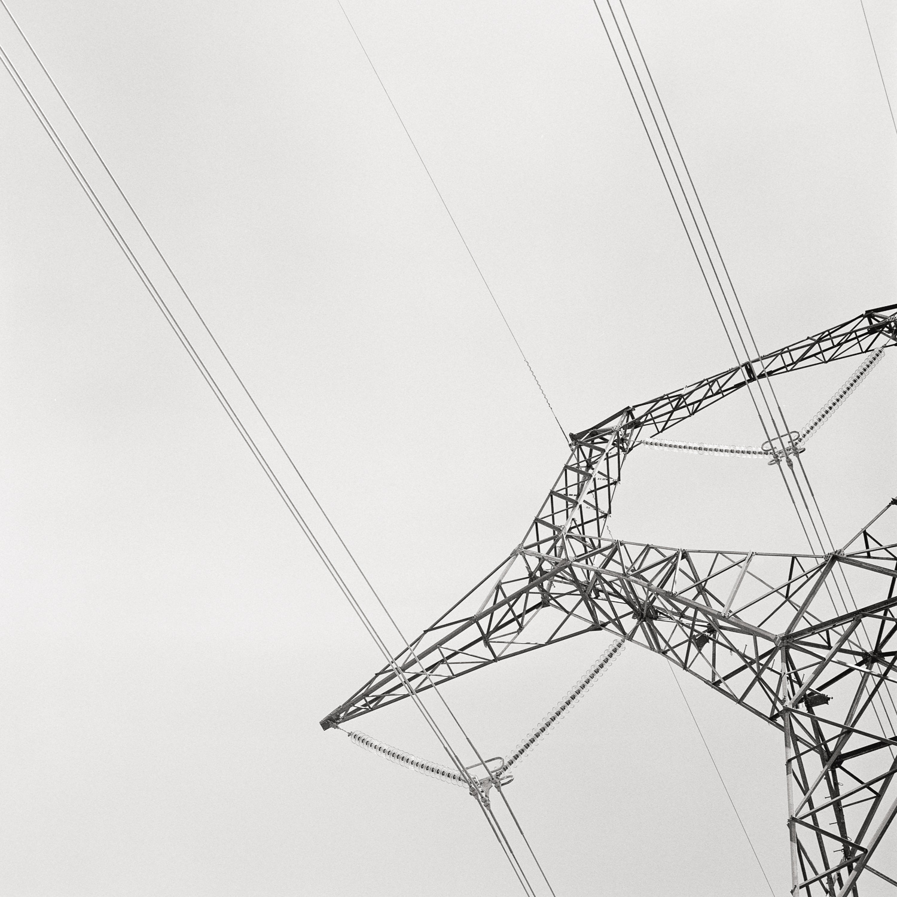
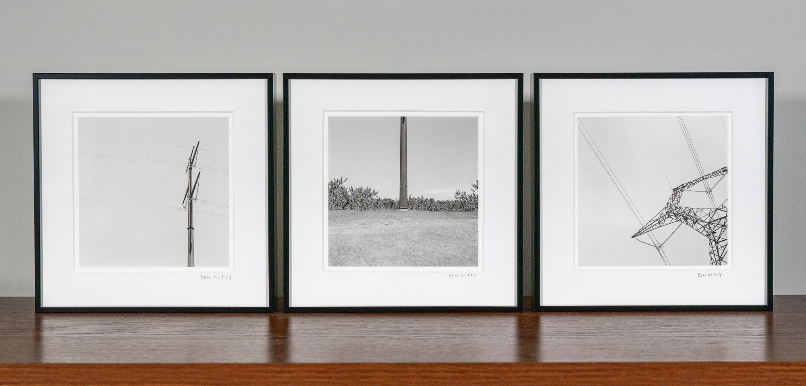
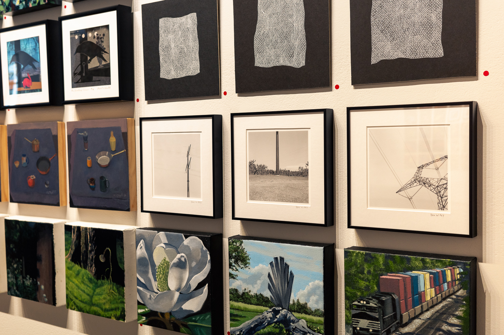
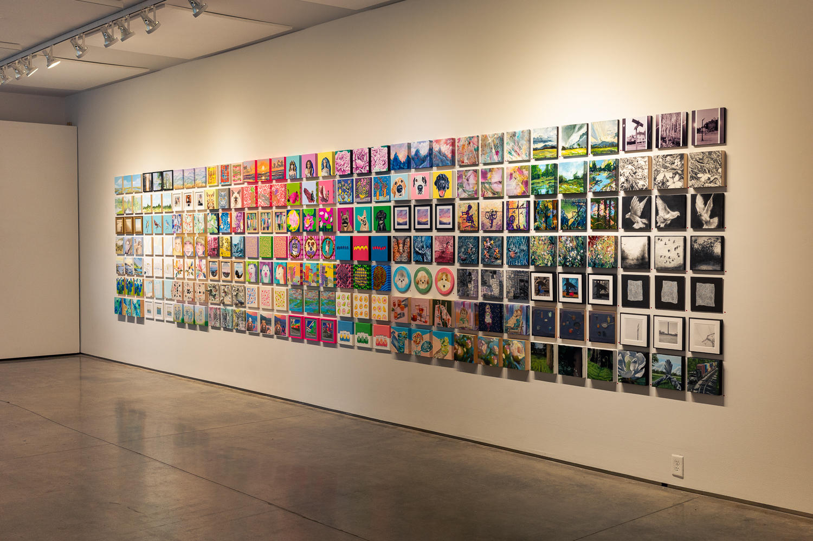

Teeny Tiny Trifecta 9
A group exhibition and fundraiser
4-25 September 2026
Second Street Gallery
Charlottesville, VA
The Exhibition
I was part of a group exhibition with over 200 other artists. Each artist created three works that measure 8" x 8".
Artist Statement
For this series, I explore how infrastructure shapes and divides the natural world. I am drawn to the scale of utility poles and towers. How they divide the sky into geometric shapes. How they tower over the landscape below. Over time we tend to ignore the infrastructure around us. We quickly drive past a series of utility poles on our way to work, while running errands, while going to see friends or family, not noticing the rhythm of the lines and poles across the sky and landscape. Photography stops time, allowing us to spend extended time with a fleeting moment, to see things we might over look. My hope is that my work will help someone slow down and notice the world around them and perhaps even see beauty in the overlooked details. All three photographs are film photographs that have been scanned and edited digitally. The photographs are archival pigment prints on Hahnemüle Photo Rag Baryta paper. The photographs are 5" x 5" on 7.75" x 7.75" paper and matted in 8" x 8" metal frames.
The Photographs











